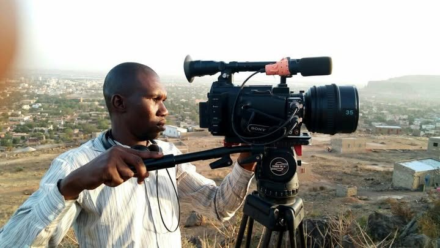
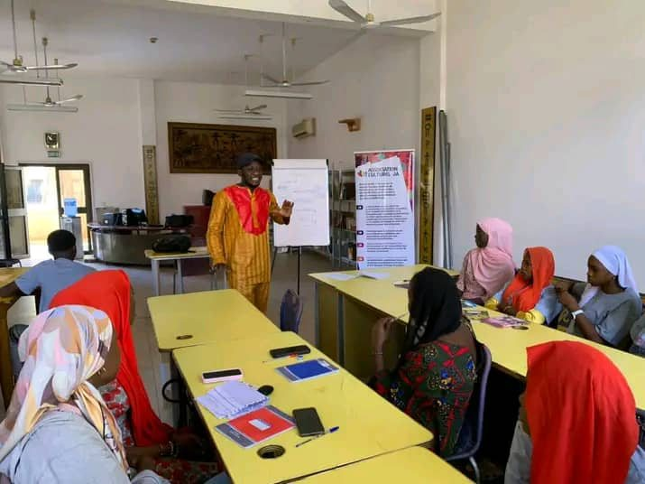

Nos programmes
Quatre façons de participer à la vie de JA IMAGE, du simple spectateur au cinéaste en production.
Vue d'ensemble
Un programme complet pour développer les compétences techniques et artistiques : scénario, réalisation, montage, son — pour débutants et niveaux avancés.
Transformer les idées en réalisations cinématographiques de qualité, de la conception à la postproduction, avec les technologies et les talents locaux.
Un espace calme et propice à la création scénaristique, avec mentorat, ateliers, consultations individuelles et rencontres avec des professionnels.
Un soutien financier à l'écriture, à la production et à la postproduction des cinéastes autodidactes — cinéma, documentaire, court métrage, fiction.

Des séances régulières, en salle ou en plein air, pour découvrir le cinéma africain et international et en discuter ensemble.

Des temps courts et intensifs pour écrire, tourner ou monter, encadrés par des cinéastes expérimentés.

Un mentorat personnalisé pour les autodidactes qui veulent aller plus loin sur un projet précis.
Le parcours
Vous nous contactez ou participez à une séance découverte pour comprendre les formats proposés.
Vous rejoignez le programme qui correspond à votre niveau, via l'espace autodidactes.
Ateliers, mentorat et prêt de matériel tout au long du parcours.
Vos projets sont présentés lors d'une projection publique ou d'un ciné-club.
Et bientôt
Trois outils en préparation pour toute la communauté du cinéma malien.
Découvrir nos initiatives